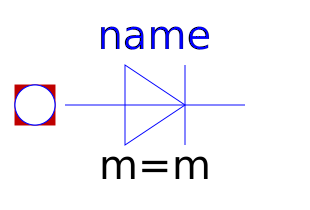
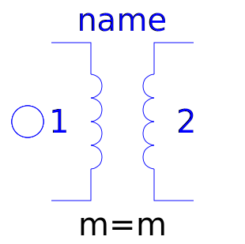
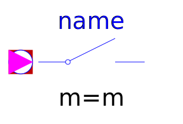
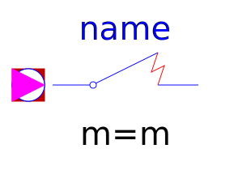

This package contains analog electrical multiphase components with idealized behaviour, like thyristor, diode, switch, transformer.
| Name | Description |
|---|---|
|  IdealDiode | Multiphase ideal diode |
| Multiphase ideal thyristor | |
| Multiphase ideal GTO thyristor | |
| Multiphase ideal commuting switch | |
|
|
Multiphase ideal intermediate switch |
|  IdealTransformer | Multiphase ideal transformer |
| Multiphase idle branch | |
| Multiphase short cut branch | |
| Multiphase ideal opener | |
|  IdealClosingSwitch | Multiphase ideal closer |
| Multiphase opener with arc | |
|  CloserWithArc | Multiphase closer with arc |